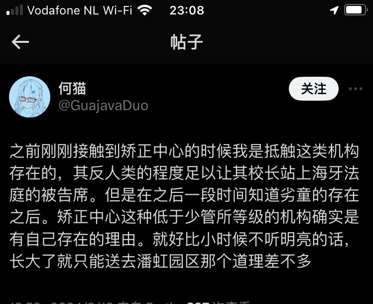

北雁冬翼（simone luxem）🏳️⚧️🏳️🌈🔬
@Simone_Luxem
这是人能说出来的话…？
就算你把芥雏子抓过来也不应该给塞矫正中心去，我以为这既是常识也是底线的…
以及，矫正机构的负责人以及其中的工作人员所应该得的可不是被送去海牙
它们不应该被交给法律处理，因为法律仅是应该被用于处置文明社会中所会发生的事情的
它们应该被私刑，应该被折磨死

何猫
@GuajavaDuo
之前刚刚接触到矫正中心的时候我是抵触这类机构存在的，其反人类的程度足以让其校长站上海牙法庭的被告席。但是在之后一段时间知道劣童的存在之后。矫正中心这种低于少管所等级的机构确实是有自己存在的理由。就好比小时候不听明亮的话，长大了就只能送去潘虹园区那个道理差不多